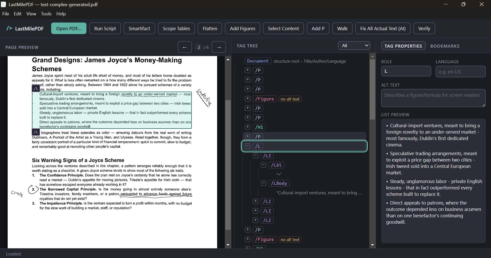
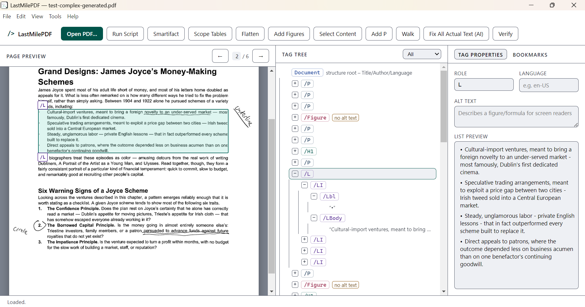
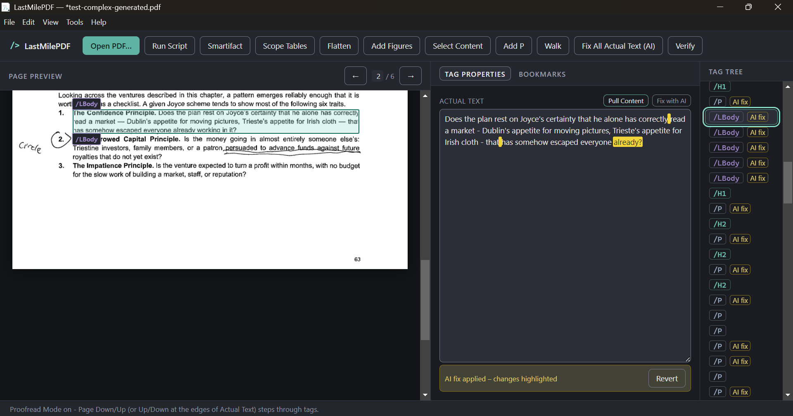
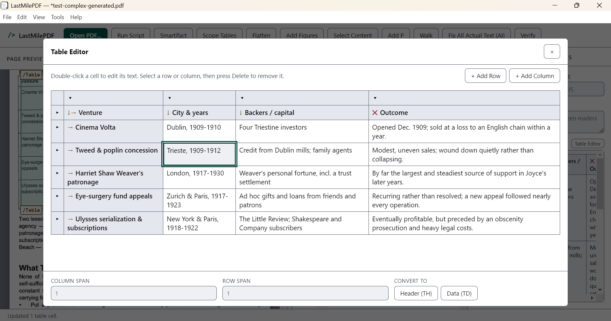
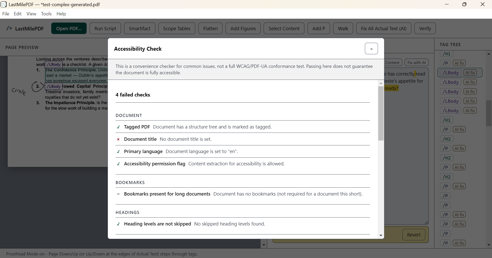

LastMilePDF is a free desktop app for cleaning up the tag structure behind PDF/UA and WCAG compliance — built for the accessibility work that auto-taggers leave half-finished, and priced for the institutions that can't put Acrobat Pro on every desk.
Select a tag and its content highlights on the page. Click content on the page and its tag is selected — no mode switching, no dialogs to hunt through.


Two themes, following your system setting by default. Both meet WCAG 2.1 AA for contrast; the light one goes further, to 7:1 for text.
Universities and nonprofits are under real, growing pressure to make PDFs accessible — course materials, grant reports, public filings, scanned archives. Most of that work is manual tag cleanup, and most institutions doing it are stretched thin on both staff and software budget.
Title II ADA rules, Section 508, and WCAG 2.1 AA obligations apply to campus course content, public-facing documents, and grant deliverables alike. The gap is almost always in the tag tree, not the visible page.
LastMilePDF is free and open source under the MIT license. Use it on as many machines as you need — a disability services office, a library digitization lab, a one-person communications team — without a procurement cycle.
It doesn't OCR or auto-tag — it makes the manual review and cleanup pass fast. Keep using whatever auto-tagger or Acrobat license you already have; LastMilePDF covers the editing experience Acrobat's UI makes painful.
Keyboard-first tag editing, built specifically around the repetitive cleanup work that scanned and auto-tagged PDFs generate.
Reorder, retype, merge, and delete tags with keyboard shortcuts built for doing it hundreds of times in a row — not for occasional use.
Fix table headers and scope automatically instead of hand-tagging every <TH>/<TD> relationship.
Drag a rectangle over the page preview and press one key to tag what's underneath. It cuts text at the rectangle's edges, so a heading the auto-tagger swallowed into the paragraph below it comes out as a real heading — and a box drawn around a set of bullets — or around an academic reference list marked out by nothing but its hanging indents — becomes a properly structured list.
Bulk-correct a mis-tagged role across the whole document in one pass.
Sequence repeated cleanup actions into a saved script, then run the same fix across every document in a batch of scans.
Strip extraneous span/div tags that auto-taggers leave behind, without touching the content that matters.
Clean up OCR errors in Actual Text fields with any AI provider you configure, with every change highlighted for your approval before it's applied.
Tag figures on scanned pages that the auto-tagger skipped, and filter straight to figures when it's time to add alt text.
Walk the tree automatically at the pace you set — no more holding down the arrow key through a 40-page document.
Compare OCR text against the source image side by side, and highlight any difference between Actual Text and OCR so you can review your own edits.
Artifact full-page decorative figures in one click — the fix for auto-taggers that generate a spurious figure tag on every scanned page.
Three of the places the manual pass usually gets slowest: proofreading OCR text against the page, sorting out table headers, and working out what still needs fixing.



It's meant to complement the tools you likely already have — an auto-tagger and/or Adobe Acrobat — by making the manual review and correction pass fast.
Free, MIT-licensed, no account required.